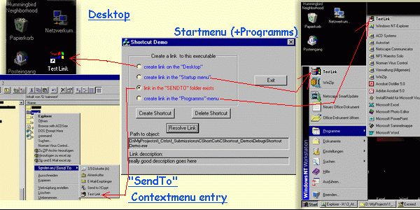
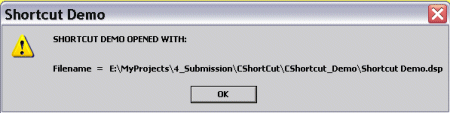

BODY, P, TD { font-family: Verdana, Arial, Helvetica, sans-serif; font-size: 10pt } H2,H3,H4,H5 { color: #ff9900; font-weight: bold; } H2 { font-size: 13pt; } H3 { font-size: 12pt; } H4 { font-size: 10pt; color: black; } PRE { BACKGROUND-COLOR: #FBEDBB; FONT-FAMILY: "Courier New", Courier, mono; WHITE-SPACE: pre; } CODE { COLOR: #990000; FONT-FAMILY: "Courier New", Courier, mono; }
Title: CShortcut (Shell links to special folders) Author: Thomas Latuske Email: cobuser@aol.com Environment: VC++ 6.0, NT4.0, XP Home Keywords: Shortcut, Shell, Link, lnk, COM, IShelllink, Shell, SendTo, MFC Description: This class enables you to build shortcuts to any File/Folder (like the Startmenu, SendTo-contextmenu...) Section: General SubSection: Shell Programming

12.05.2004 - routine to resolve ShellLinks added
This class enables you to build Shell links (shortcuts) easily like you see them everywhere
in Windows (e.g.: on the Desktop, in the Contextmenu's "SendTo"-entry, in the
Startmenu.....). You are also able to give a description or command-line arguments to
the link. It is really a snap to make shortcuts with this class. Have a look at the
demo project to see how easy it is!
shell32.dll. no, the
1. add the files Shortcut.h and Shortcut.cpp to your project and Include the header
#include "Shortcut.h"
2. create a variable of class CShortcut
i.e. m_pShortcut // a pointer to CShortcut
3.1. Call the function SetCmdArguments in case you need command-line arguments
SetCmdArguments(CString sArg)
the CString is/are the argument(s) you need to call with your file
3.2 Call the function CreateShortCut to create a shortcut (the function name says it ;-)
CreateShortCut(CString LnkTarget, CString LnkName, UINT SpecialFolder, CString LnkDescription, CString IconLocation, UINT IconIndex)
LnkTarget the File/Folder the link belongs to LnkName the name of the ShortCut SpecialFolder where to put the shortcut to (see below or for more folders seeLnkDescription an application can use it to store any text information and canIconLocation path to the file where the icon is located that should be used. Can beIconIndex the index of the icon in the file |
Definition |
Description |
|
CSIDL_SENDTO |
SendTo Menu/Folder |
|
CSIDL_DESKTOP |
Desktop for current User |
|
CSIDL_COMMON_DESKTOP |
Desktop for all Users |
|
CSIDL_STARTUP |
Autostart for current User |
|
CSIDL_COMMON_STARTUP |
Autostart for all Users |
|
CSIDL_STARTMENU |
Start-menu for current User |
|
CSIDL_COMMON_STARTMENU |
Start-menu for all Users |
|
CSIDL_PROGRAMS |
Programs-menu for current User |
and many more.....
4. You want to delete a Shortcut? O.K. read on. Just use DeleteShortCut
DeleteShortCut(CString LnkName, UINT SpecialFolder)
LnkName the name of the Shortcut SpecialFolder again a define for a special folder (see CreateShortCut)5. You want to detect a shortcut? Then use isLinkAvailable
isLinkAvailable(CString LnkName, UINT SpecialFolder)
LnkName the name of the Shortcut SpecialFolder again a define for a special folder (see CreateShortcut) 6. Now you can resolve and retrieve the description of a shortcut, use:
ResolveLink(CString LnkName, UINT SpecialFolder, HWND hwnd, CString &LnkPath, CString &LnkDescription)
LnkName the name of the ShortCutSpecialFolder the location of the shortcuthwnd The handle of the parent window for any message boxes that may be displayed by the shell.&LnkPath reference to a string that receives the path to the object&LnkDescription reference to a string that receives the description of the link7. There are also two private helper routines that are used internal:
GetSpecialFolder This routine is a helper that finds the path to the special folderShortToLongPathName This routine is a helper that builds a long path from 8+3 one. I know thatGetLongPathName but I'm using half of my time an "old" NT4Now ya ready to build links to everything on ya computer. >B-}
I would like to thank the programmer who made this class possible due to his or her good
IShellLink implementation! I really don't remember where I found it. Sorry!
And Michael Dunn for his great article Introduction to COM - Wahat It Is and How to Use It
I was in the need to give the user of a little application of mine an option to send files
through the right-click "SendTo" menu to my Program. After searching for a few hours I've had
enough material and information to bring up this class (my first contact with COM Technology).
You cannot only put executables to the "SendTo" menu but also folders which can be useful to
search and collect some files and Zip them up later (for exampel).
You see there are many useful things todo with links. Another possibility is to link something
to the control panel. Or you can......................